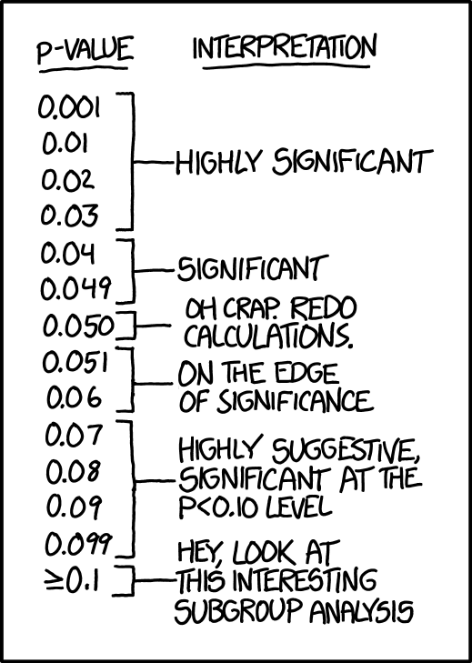

Breaking Free From ‘The Cult of P’
Apologies to all - I know I have already preached about this in the first WhatsApp message I sent out on ‘Weekly Stats Tips’ about 12 months ago. But given the idea is so important, there’s no permanent and easily-accessible record of that message, and also that in hindsight I think I told you what not to do, but didn’t really suggest what you could/should do - I’m going to make it a blog post here as well.
1 The Issue
So, as researchers how many of you can honestly say that you have never used language around p-values in a way reminiscent of this xkcd comic (or one of these 509 variations on the same theme):

I know I can’t. Certainly in my early research career and before changing paths to become a biostatistician, I was guilty of this sort of thing. All in the name of some misguided sense of wanting to achieve research glory by getting that p-value to fall under the all-important threshold of 0.05 (my research glory did not ever materialise by the way).
Well can I suggest, it just doesn’t matter. And can I also suggest to stop thinking about p-values in this way.
It’s generally accepted that Sir Ronald Fisher was the guy who at least formalised the ideas of Null Hypothesis Significance Testing (NHST) and the p-value in the 1920’s. He never intended for the p-value of 0.05 to be set in stone as an arbiter of the value of a piece of research in a statistical sense, and certainly not in a scientific sense. The intention was to use it to guide decision making, not make the actual decision. But, in the past 100 years this arbitrary threshold of p = 0.05 has not only stuck, but taken on an almost mythic status in the research community, in part it seems because humans are lazy and like to avoid decision-making where possible. The natural and silly extension to this entrenched notion of “significance” is that researchers may feel elated if their statistical test returns p = 0.049 and despondent if it returns p = 0.051. On reflection, any rational person can see that’s crazy, but it doesn’t seem to give us pause for thought when we have our results in front of us.
2 What Not To Do
You may be aware that there has been a push in recent years by the statistical community to abandon the p-value all together, set off in large part by a statement published by the American Statistical Association in 2016. There is nothing new in any of this - the same issues have been of concern for decades and a Pubmed (or even Google) search will reveal a large literature on the topic. In 2019, The American Statistician dedicated an entire special issue to statistical inference entitled “Statistical Inference in the 21st Century: A World Beyond p < 0.05.” If you scan down those titles you’ll see that not too many are in favour of retaining the 0.05 dichotomy we seem to have imposed on ourselves. The Editorial in that edition doesn’t pull any punches in terms of how to use p-values in your research:
Don’t base your conclusions solely on whether an association or effect was found to be “statistically significant” (i.e., the p-value passed some arbitrary threshold such as p < 0.05).
Don’t believe that an association or effect exists just because it was statistically significant.
Don’t believe that an association or effect is absent just because it was not statistically significant.
Don’t believe that your p-value gives the probability that chance alone produced the observed association or effect or the probability that your test hypothesis is true.
Don’t conclude anything about scientific or practical importance based on statistical significance (or lack thereof).
And the authors go further to say:
The ASA Statement on P-Values and Statistical Significance stopped just short of recommending that declarations of “statistical significance” be abandoned. We take that step here. We conclude, based on our review of the articles in this special issue and the broader literature, that it is time to stop using the term “statistically significant” entirely. Nor should variants such as “significantly different,” “p < 0.05,” and “nonsignificant” survive, whether expressed in words, by asterisks in a table, or in some other way.
Pretty damning!
3 What You Could/Should Do
If you look at some of the papers in that special issue, you will find a wealth of suggestions about how to approach a “Post ‘p < 0.05’ world”, including that we should all become Bayesians (not meaning to toot my own trumpet, but I have also written around this in one of my not-so-highly-cited papers several years ago - I’m sure it will gain traction in years to come!).
So I’m not going to reiterate all of those suggestions here. Instead, for what my opinion is worth, I have two practical tips that I think would make interpreting and reporting our research more robust and less reliant on the p-value.
3.1 Use A Language Of ‘Evidence’
We can still calculate p-values as we currently do - nothing needs to change. But instead of referring to the p-value itself, let’s start discussing our results in the context of ‘evidence’ (i.e. against the null hypothesis of no effect). The following table from this paper sums it up beautifully and so I am not going to reinvent the wheel (in fact I can thoroughly recommend the other 3 papers in the series, so do give them a look if you have time).

Now, I have used my own subtle variation on the terminology over the years and replaced “insufficient” with “weak”, “some” with “moderate” and “overwhelming” with “very strong”. The point is, it doesn’t really matter what words you use to describe your ‘effect’ with - this kind of language immediately frees you from the confines of an arbitrary dichotomisation that forces you to either value or devalue all of your hard work in one fell swoop.
eg of how to use…